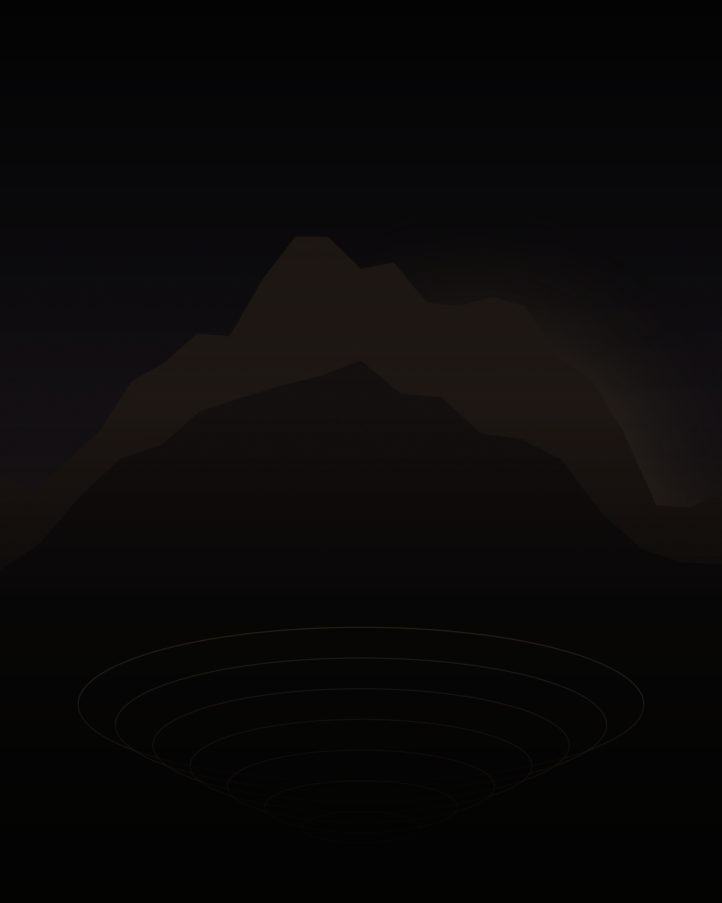

O destino
A commodity que move a transição energética.
Negócios, internacionalização e oportunidades no mercado latino-americano — a partir do país que ocupa uma posição central na cadeia global de minerais críticos.
Entender o Chile é entender como um país organiza uma economia em torno de recursos naturais: regulação, infraestrutura, capital estrangeiro e a disputa por quem processa o que se extrai. É uma aula sobre cadeia produtiva, ciclo de commodities e sobre o que a América Latina pode — ou não — capturar do próximo ciclo.
Na prática
O que esperar
da imersão.
-
01
Visitas a empresas globais
Acesso direto a empresas que moldam a economia da região. Mais do que conhecer, você entende como elas operam, crescem e tomam decisões estratégicas na prática.
-
02
Conversas com quem opera o mercado
Executivos e empresários que estão dentro do jogo compartilham visões, bastidores e decisões que não chegam nos livros.
-
03
Networking com o grupo
Empresários, investidores e executivos brasileiros vivendo a mesma agenda. As conexões seguem depois do embarque de volta.
-
04
Contexto local
Gastronomia, rotina, comportamento, arquitetura e dinâmica social: o que ajuda a entender como aquele mercado pensa, consome e cresce.
Estrutura
Conforto existe para permitir foco.
- 01
Hospedagem
Locais selecionados estrategicamente, com conforto, localização e estrutura alinhados ao padrão da experiência.
- 02
Logística organizada
Deslocamentos, acessos e detalhes operacionais resolvidos. Você não perde tempo com fricção.
- 03
Concierge
Suporte dedicado durante toda a imersão, para ajustes pontuais ou demandas específicas.
- 04
Agenda estruturada
Cada dia planejado para equilibrar conteúdo, conexões e experiência, sem sobrecarga.
A confirmar: datas da próxima edição, cidades do roteiro, investimento, o que está incluso no pacote e as empresas visitadas.
Candidatura
Quer estar no próximo grupo para o Chile?
O grupo é reduzido e passa por seleção. Envie sua candidatura e nossa equipe entra em contato com os próximos passos e os detalhes da imersão.
Quero participar